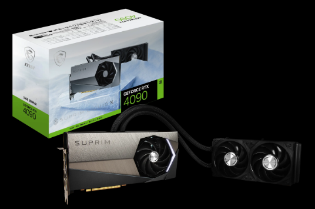
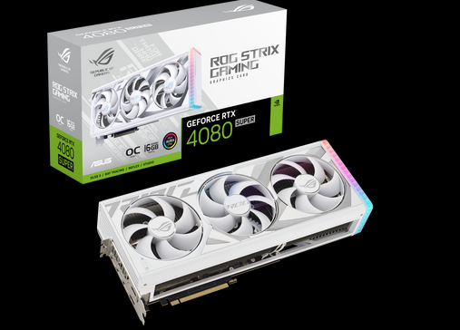
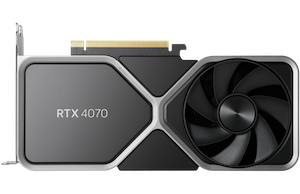
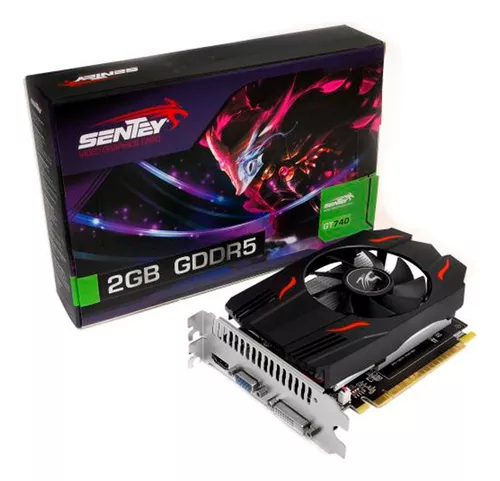
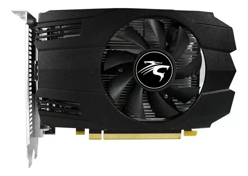

GRAFICAS DE GAMA ALTA
MSI GeForce RTX 4090 SUPRIM LIQUID X 24G

Multiprocesadores de streaming NVIDIA Ada Lovelace: hasta el doble de rendimiento y eficiencia energética. Núcleos tensoriales de cuarta generación: rendimiento hasta 4 veces mayor con DLSS 3 frente a renderizado de fuerza bruta. Núcleos RT de tercera generación: rendimiento de trazado de rayos hasta 2X. Desarrollado por GeForce RTX 4090. Integrado con interfaz de memoria de 24GB GDDR6X de 384 bits.
ASUS ROG Strix GeForce RTX 4080 SUPER White OC Edition

La ROG Strix GeForce RTX™ 4080 aporta un nuevo significado a seguir la corriente. Por dentro y por fuera, cada elemento de la tarjeta da a la monstruosa GPU espacio para respirar libremente y conseguir rendimiento térmico El reino desatado de la arquitectura NVIDIA Ada Lovelace ya está aquí. Potenciado por GeForce RTX Serie 40 y DLSS 3 Nuevos multiprocesadores de streaming Hasta el doble de rendimiento y eficiencia energética Núcleos sensores de cuarta generación Hasta 4 veces más rendimiento con DLSS 3 frente a la renderización por fuerza bruta Núcleos sensores de cuarta generación Rendimiento de trazado de rayos de hasta el doble
NVIDIA GeForce RTX 4070

Velocidad en cada lectura Cuenta con 7680 núcleos, por lo que la interfaz de la placa será algo sorprendente. Este tipo de estructura es apropiado para el procesamiento de tecnologías más complejas y modernas caracterizadas por grandes volúmenes de datos. Calidad de imagenCriterio fundamental a la hora de elegir una placa de video, su resolución de 7680x4320 no te defraudará. La decodificación de los píxeles en tu pantalla te harán ver hasta los detalles más ínfimos en cada ilustración.
NVIDIA GeForce RTX 4060 TI

Este componente electrónico procesa la información que llega al dispositivo y la transforma en imágenes o vídeos para mostrarlos visualmente. Es ideal para trabajar con aplicaciones gráficas, ya que permite obtener imágenes más nítidas.Nvidia es el fabricante líder de tarjetas de video, su calidad garantiza una experiencia positiva al desarrollar el motor gráfico de su computadora. Además, sus procesadores utilizan tecnología de vanguardia para que puedas disfrutar de un producto rápido y duradero.
GRAFICAS GAMA MEDIA
Tarjeta Gráfica Dual Nvidia Geforce Rtx 3050 6gb Oc Pcie 4.0

Este componente electrónico procesa la información que llega al dispositivo y los transforma en imágenes o videos para mostrarla visualmente. Es ideal para trabajar con aplicaciones gráficas ya que permite obtener imágenes más nítidas.
GRAFICAS GAMA BAJA
Gigabyte Placa Grafica Gt1030 Gv-n1030d4-2gl 2gb Ddr4 Lp

Este componente electrónico procesa la información que llega al dispositivo y los transforma en imágenes o videos para mostrarla visualmente. Es ideal para trabajar con aplicaciones gráficas ya que permite obtener imágenes más nítidas.
Placa De Video Msi Geforce Gtx 1650 D6 Ventus Xs Ocv1

Con una velocidad de memoria de 12000 MHz los datos del procesador central se van a traducir en información comprensible en tan solo un abrir y cerrar de ojos; decodificará tantos ciclos por segundo que hará más efectiva la transmisión de datos a otros componentes. Con esta cualidad, el equipo ganará agilidad y eficiencia. Velocidad en cada lectura Como cuenta con 896 núcleos, los cálculos para el procesamiento de gráficos se realizarán de forma simultánea logrando un resultado óptimo del trabajo de la placa. Esto le permitirá ejecutar lecturas dispersas y rápidas de y hacia la GPU.Calidad de imagen Criterio fundamental a la hora de elegir una placa de video, su resolución de 7680x4320 no te defraudará. La decodificación de los píxeles en tu pantalla te harán ver hasta los detalles más ínfimos en cada ilustración.
Placa De Video Gt740 2gb Geforce Sentey Ddr5 pcie pcreg

Placa De Video Geforce Nvidia Sentey Gtx 1050 4gb Gddr5 Dp Hdmi Dvi

Mejora tu experiencia de juego con la Placa de video Nvidia Sentey GeForce 10 Series GTX 1050 4GB OC Edition de 4GB. Esta potente tarjeta gráfica cuenta con 640 núcleos y una velocidad de memoria de 7000 MHz, lo que te permitirá disfrutar de tus juegos favoritos con gráficos de alta calidad y un rendimiento fluido. La compatibilidad con DirectX y OpenGL asegura que podrás jugar a los últimos títulos sin problemas. Con una resolución máxima de 7680x4320, esta placa de video te permitirá sumergirte en mundos virtuales increíblemente detallados y realistas. Además, gracias a su capacidad para conectar hasta 3 monitores, podrás disfrutar de una experiencia de juego más inmersiva y panorámica. La Placa de video Nvidia Sentey GeForce 10 Series GTX 1050 4GB OC Edition es fácil de instalar en tu PC, ya que cuenta con una interfaz PCI-Express 3.0 y un requerimiento energético de 100 W. Sus múltiples opciones de conectividad, como DisplayPort 1.4a, HDMI y DL-DVI-D, te permitirán conectarla a una amplia variedad de dispositivos y monitores.